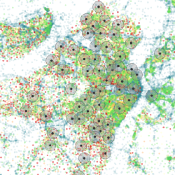

About
I love data visualization and GIS. I've trained in a few scientific fields and am interested in many more. With a career in data visualization, I can explore data from many scientific fields - I don't have to choose! I recognize the disconnect between scientific papers and popular science articles and believe the difference can be remedied with images and user interaction. Complex data that would otherwise be explained through pages of text can be represented in a clear, concise, and entertaining way. This is the future of uncovering trends, sharing discoveries, and informing decisions.
Resumé and Curriculum Vitae
Portfolio
-
Recent Work 
-
Design Mockups 
-
Weather Phenomena 
-
Analyses  -
Media Maps 
-
Personal Interests 
-
Diagrams -
Microscopy

Pronghorn Range, before and after redesign
Made for FixWikiMaps as part of Maplift. Learned a lot about texturing maps - used Manually Shaded Relief from Natual Earth and bathymetry from Clean Topo 2. Also added shadows and highlights around certain layers.

Antique Letter Map of the US
For fun.

Personal Website - You're Here!
Mockup in Inkscape, bootstrap as framework, custom HTML and CSS


Downburst Progression from SW to NE Across Kansas City
A downburst, created by cold dry air crashing to the ground out of a thunderstorm. Strong gust fronts accompany downbursts, as seen in the peaks in wind speed, strongest in the SW of the city, and weakening as the front dissipated to the NE. We know the gust front was the result of a downburst because of the concurrent drop in temperature and relative humidity, signaling cold dry air.

Temperature Inversion
Usually there is not much variation in temperature accross Kansas City, as shown on April 22nd and 24th. Sometimes temperature inversion occurs, a result of a layer of warm air acting as a cap, lessoning upward convection, and trapping cold air in low elevation areas.

Tornado in Kansas City
Understory was able to publish this tornado's path before NWS. There was some building damage but luckily the tornado hit mostly low-population areas.

Tropical Depression Bill - Pressure Graph
Tropical storms are accompanied by a drop in atmospheric pressure. Understory could see the storm pass through Dallas around 5pm on June 17, 2015.
Coldfront Temperature Timeline
Understory can often see cold fronts pass through Kansas City. This one traveled from Northwest to Southeast, and brought a temperature drop of 15°F.

Visualizing 29 Million Wind Speed Data Points
Understory released this visualization showcasing the power of hyper-local wind data.

Optimizing Weather Station Site Selection
Upper-Selected possible sites in St. Louis, each with a one mile buffer to show coverage. Lower-Same sites with background layer showing census housing unit data. The higher dot density = more housing unit groups. Color scale = blue to green to yellow to orange to red in order of increasing number of housing units.
Work with Regression Kriging
Investigated a new method of interpolating Understory's temperature data to include geographic variables. In this example, the leave-one-out method was used to evaluate the effectiveness of including elevation in the temperature interpolation during times of temperature inversion as seen with cold pools (cold air sinking into low-elevation areas). This method only improved the temperature accuracy by 1°F, and was not implemented.

Comparing Understory's RTi weather station data with ASOS government weather station data
The RTi's temperature, humidity, and pressure measurements agree excellently with data taken from airport weather stations. Exact accuracy values were calculated and shared with clients in reproducible report form.

Hail Map for Boston.com
Hail size predictions from radar often disagree with measurements taken from the ground.

Hail Table for Boston.com
Hail size predictions from radar often disagree with measurements taken from the ground.
Understory - Public Storage Partnership
A map to show the sites Understory would utilize for weather stations if a partnership formed.

Understory's Possible Sites in Somerville
Possible sites shared with the City of Somerville.
Boston Livability Map
Personal project to find areas within walking distance of parks, transit, and grocery stores.
Berlin Livability Map
Personal project to find areas within walking distance of parks, transit, and grocery stores. Although there are many parks in Berlin, they are the limiting factor due to small, densely distributed grocery stores and an extensive public transportation system.